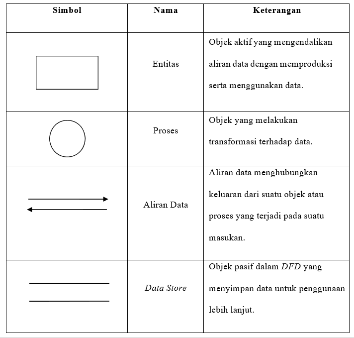
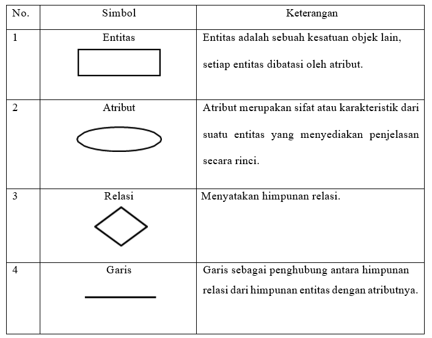

BAB I
PENDAHULUAN
1.1 Latar Belakang
Proses produksi erat kaitannya dengan sistem inventory (persediaan), yaitu untuk menjamin lancarnya proses produksi. Persediaan adalah bahan-bahan, bagian yang disediakan, dan bahan-bahan dalam proses yang terdapat dalam perusahaan untuk proses produksi, serta barang-barang jadi atau produk yang disediakan untuk memenuhi permintaan dari konsumen atau pelanggan. Kegiatan produksi tidak hanya berorientasi pada produk yang dihasilkan, tetapi bagaimana pencatatan barang sesuai dengan produksi itu dan dapat berjalan dengan baik. Pengolahan data dan informasi secara cepat, tepat dan efisien adalah hal penting yang dibutuhkan bagi setiap perusahaan atau instansi.
PT. Konveksi Jaya merupakan perusahaan yang bergerak pada bidang sandang di kota Yogyakarta yang memproduksi pakaian berupa kaos polos. Permasalahan yang ditemui yaitu pada proses pencatatan laporan stock barang serta barang masuk dan keluar. Rekap dokumen pencatatan dilakukan ketika saat ada stock barang, barang masuk, dan pada saat barang keluar. Setiap bulan dilakukan rekap dokumen untuk mengontrol sirkulasi yang terjadi pada gudang, yang bertanggung jawab mengontrol persediaan barang pada gudang yaitu petugas gudang. Pada proses pencatatan stok barang, baik itu barang masuk dan barang keluar masih menggunakan cara manual dengan nota, buku besar dan hanya dimasukkan di software Ms. Excel ketika laporan akhir bulan. Proses manual ini mengakibatkan terjadinya kekeliruan dan kesalahan dalam pencatatan sehingga menyulitkan petugas gudang dan admin dalam mengelola data produk barang serta melakukan pencatatan produk barang masuk ataupun keluar dan memberikan laporan kepada pemilik dengan hasil laporan yang kurang akurat dan terperinci.
Berdasarkan dari permasalahan yang ada, maka dibuat suatu aplikasi sistem informasi persediaan barang berbasis web untuk meminimal kesalahan human error. Aplikasi ini sebagai media untuk memudahkan petugas gudang saat mencatat persediaan barang serta admin dalam mengelola. Data yang diolah yaitu data barang yang meliputi nama barang, jenis barang, satuan barang, data supplier, data barang masuk serta keluar. Sistem dibangun berbasis web dengan HTML dan CSS dengan Framework Bootstrap serta menggunakan bahasa pemrograman PHP dengan Framework CodeIgniter dan JavaScript, MySQL sebagai database tempat penyimpanan, dan Apache sebagai web server.
1.2 Rumusan Masalah
Berdasarkan latar belakang masalah di atas, maka permasalahan yang dapat diambil adalah Bagaimana merancang dan membangun sebuah Sistem Informasi Persediaan Barang Berbasis Web sehingga petugas gudang dan admin dapat mencatat serta mengelola data produk kaos dengan mudah dan pemilik dapat mengakses serta melihat laporan barang dengan lebih mudah, akurat dan terperinci.
1.3 Batasan Masalah
Batasan masalah di dalam sistem ini adalah :
1. Pembuatan Sistem Informasi yang dapat mengelola Persediaan Produk Barang yang meliputi nama barang, jenis barang, satuan barang, jumlah stock barang, informasi supplier, informasi keluarnya barang, dan informasi masuknya barang serta laporan produk barang.
2. Hak Akses pada Sistem ini yaitu Pemilik, Admin dan Petugas Gudang
3. Aplikasi yang dibangun berbasis web dengan HTML dan CSS dengan Framework Bootstrap serta menggunakan bahasa pemrograman PHP dengan Framework CodeIgniter dan JavaScript, MySQL sebagai database tempat penyimpanan, dan Apache sebagai web server.
1.4 Tujuan
Adapun tujuan dari penulisan ini adalah sebagai berikut:
1. Mengimplementasikan Sistem Informasi Persediaan Barang Berbasis Web.
2. Menghasilkan informasi berupa data stok barang, pengeluaran barang dan pemasukan barang serta laporan yang dapat membantu pemilik dalam mengambil keputusan.
1.5 Manfaat
Manfaat dari penulisan laporan praktik ini adalah sebagai berikut :
1. Dapat memberikan informasi mengenai proses keluar masuk barang.
2. Mempermudah admin dan petugas dalam mengelola data-data persediaan produk barang.
3. Mendapatkan hasil informasi laporan produk barang yang akurat .
4. Serta dapat mengakses informasi dan laporan lebih cepat dan mudah.
BAB II
LANDASAN TEORI
2.1 Pengertian Perancangan
Perancangan merupakan penentuan proses dan data yang diperlukan oleh sistem baru. Manfaat tahap perancangan sistem ini memberikan gambaran rancangan bangun yang lengkap sebagai pedoman bagi programmer dalam mengembangkan aplikasi. Sesuai dengan komponen sistem yang dikomputerisasikan, maka yang harus didesain dalam tahap ini mencakup hardware atau software, database dan aplikasi.
Menurut Jogiyanto H.M menjelaskan bahwa Perancangan merupakan tahap dari analisis system dimana pada perancangan sistem digambarkan rancangan system yang akan dibangun sebelum dilakukan pengkodean kedalam suatu aplikasi (Bakti, 2016). Sedangkan menurut Mulyadi Desain atau Perancangan adalah proses penerjemahan kebutuhan pemakai informasi kedalam alternative rancangan sistem informasi yang diajukan kepada pemakai informasi untuk dipertibangkan (Bakti, 2016).
Menurut Soetam Rizky (2011 : 140) perancangan adalah sebuah proses untuk mendefinisikan sesuatu yang akan dikerjakan dengan menggunakan teknik yang bervariasi serta didalamnya melibatkan deskripsi mengenai arsitektur serta detail komponen dan juga keterbatasan yang akan dialami dalam proses pengerjaannya.
Berdasarkan beberapa pendapat diatas dapat disimpulkan bahwa perancangan adalah tahapan setelah analisis sistem yang tujuannya untuk menghasilkan rancangan yang memenuhi kebutuhan yang ditentukan selama tahap analisis serta menilai, memperbaiki dan menyusun suatu sistem yang optimal untuk waktu yang akan datang dengan memanfaatkan informasi yang ada.
2.2 Sistem Informasi
Menurut O’Brian (2005 dikutip oleh Yakub, 2012) sistem informasi (information system) merupakan kombinasi teratur dari orang-orang, perangkat keras (hardware), perangkat lunak (software), jaringan komunikasi, dan sumber daya data yang mengumpulkan, mengubah, dan menyebarkan informasi dalam II-8 sebuah organisasi. Orang tergantung pada sistem informasi untuk berkomunikasi antara satu sama lain dengan menggunakan berbagai jenis alat fisik, perintah dan prosedur pemrosesan informasi, saluran telekomunikasi atau jaringan, dan data yang disimpan atau sumber daya data.
Sedangkan menurut Jogiyanto (1999 dikutip oleh Yakub, 2012) sistem informasi adalah suatu sistem di dalam suatu organisasi yang mempertemukan kebutuhan pengolahan data transaksi harian, mendukung operasi, bersifat manajerial dan kegiatan strategi dari suatu organisasi serta menyediakan pihak luar tertentu dengan laporan-laporan yang diperlukan. Sistem informasi juga dapat didefinisikan sebagai suatu sistem yang dibuat oleh manusia yang terdiri dari komponen-komponen dalam organisasi untuk menyajikan informasi. Sistem informasi merupakan sistem pembangkit informasi, kemudian dengan integrasi yang dimiliki antarsubsistem, maka sistem informasi akan mampu menyediakan informasi yang berkualitas, tepat, cepat dan akurat sesuai dengan manajemen yang menbutuhkannya.
Dilihat dari beberapa pengertian di atas dapat di simpulkan bahwa sistem informasi merupakan suatu rangkaian informasi yang di dalamnya terdapat bagian – bagian yang berhubungan dan saling ketergantungan satu sama lain serta mencakup sejumlah komponen (manusia, komputer, teknologi informasi dan porosedur kerja), ada sesuatu yang diproses (data menjadi informasi) dan dimaksudkan untuk mencapai suatu sasaran atau tujuan tertentu yang berguna bagi penggunanya.
2.3 Persediaan Barang
Persediaan merupakan barang atau bahan yang disimpan dan akan digunakan pada saat tertentu dan dengan tujuan tertentu. Misalnya untuk proses produksi, untuk dijual kembali atau sebagai cadangan dari peralatan yang digunakan. Untuk lebih jelasnya berikut adalah beberapa penjelasan mengenai persediaan menurut para ahli :
Dalam bukunya Sofyan Assauri (2004;169) berpendapat, bahwa Persediaan merupakan sejumlah bahan-bahan, parts yang disediakan dan bahan-bahan dalam proses yang terdapat dalam perusahaan untuk proses produksi, serta barang-barang jadi/produk yang disediakan untuk memenuhi permintaan dari komponen atau langganan setiap waktu.
Hani Handoko mengemukankan bahwa persediaan atau inventory adalah sebuah istilah yang digunakan untuk menunjukan segala sesuatu atau sumber daya yang disimpan sebagai antisipasi pemenuhan terhadap munculnya permintaan (Hani Handoko, 2000;333)
Secara sederhana diungkapkan bahwa “Inventory atau persediaan merupakan simpanan material yang berupa bahan mentah, barang dalam proses dan barang jadi.” (Lalu Sumayang, 2003;189)
Berdasarkan definisi yang dikemukaan para ahli tersebut dapat ditarik kesimpulan bahwa persediaan merupakan simpanan barang yang digunakan untuk memenuhi permintaan para konsumen. Pada PSAK 14 (revisi 2008) mendefinisikan persediaan sebagai aset untuk dijual dalam kegiatan usaha normal dalam proses produksi untuk kemudian dijual dalam bentuk bahan atau perlengkapan untuk digunakan dalam proses produksi atau pemberian jasa.
Dari definisi tersebut dapat dikatakan bahwa suatu asset yang diklasifikasikan sebagai persediaan bergantung pada bisnis atau usaha yang dijalankan oleh suatu entitas. Misalnya, bangunan, rumah dan apartemen merupakan sebuah aktiva tetap atau investasi bagi perusahaan yang bergerak dibidang penjualan alat elektronik. Namun bagi perusahaan properti hal tersebut merupakan suatu persediaan yang akan dijual dalam kegiatan usahanya. Karena itu, persediaan diklasifikasikan berdasarkan jenis perusahaannya. Bagi perusahaan yang bergerak di bidang perdagangan atau perusahaan dagang mencatat persediaan sebagai persediaan barang dagang (merchandise inventory), persediaan disini merupakan barang yang dibeli oleh perusahaan dengan tujuan untuk dijual kembali dalam usaha normalnya tanpa melalui perubahan bentuk dan kualitas.
2.4 Metode DevOps
DevOps merupakan salah satu metodologi pengembangan sistem terbaru yang saat ini banyak diadopsi oleh berbagai perusahaan perangkat lunak dan organisasi IT. Konsep utama dari metodologi DevOps adalah untuk mengkombinasikan software development (Dev) dan technology operations (Ops). Dengan konsep kombinasi tersebut, dapat membantu memastikan bahwa kedua aspek tersebut dapat berpartisipasi bersama pada keseluruhan lifecycle, dimulai dari tahapan desain hingga support untuk produksi.

Gambar Tahapan DevOps
- Pada metodologi DevOps, terdapat beberapa tahapan pengembangan yang dapat dijalani, yaitu :
- Perencanaan (Plan)
Pada tahap perencanaan, proses identifikasi tujuan dan persyaratan untuk merancang dan mengembangkan perangkat lunak. - Pembuatan Code (Code)
Setelah rencana dibuat, tim developer dapat mulai menulis kode yang dibutuhkan untuk mengembangkan produk. - Build
Pada tahapan ini, setelah tim developer selesai menulis kode yang dibutuhkan, mereka akan memasukan kode tersebut ke dalam shared code repository. - Pengujian (Testing)
Pada tahapan ini, akan dilakukan pengujian sistem dengan menggunakan testing tools. Jika ada masalah yang ditemukan pada fase ini, maka masalah tersebut akan dikirim kembali ke tim developer untuk diselesaikan. - Release
Pada tahap ini, setiap perubahan kode telah melewati serangkaian pengujian dan tim IT operations telah memastikan bahwa masalah yang merusak dan regresi sudah teratasi dengan baik. - Deploy
Setelah production environment dibuat dan dikonfigurasi maka versi terakhir dari pengembangan yang telah dilakukan akan diterapkan. - Operate
Tahapan ini, berkaitan dengan konfigurasi dan pengelolaan aplikasi perangkat lunak setelah penerapan. - Monitor
Pada tahap terakhir ini, tim IT operations akan terus bekerja keras untuk memantau infrastruktur, sistem, dan aplikasi. Dilakukan monitoring untuk performa sistem, log, UX, dan manajemen incident.
2.5 Data Flow Diagram (DFD)
Data flow diagram adalah suatu grafik yang menjelaskan sebuah sistem dengan menggunakan bentuk-bentuk dan simbol-simbol untuk menggambarkan aliran data dari proses-proses yang saling berhubungan. Data flow diagram ini adalah salah satu alat pembuatan model yang sering digunakan, khususnya bila fungsi-fungsi sistem merupakan bagian yang lebih penting dan kompleks dari pada data yang dimanipulasi oleh sistem.
Dengan kata lain, data flow diagram adalah alat pembuatan model yang memberikan penekanan hanya pada fungsi sistem. Data flow diagram ini merupakan alat perancangan sistem yang berorientasi pada alur data dengan konsep dekomposisi dapat digunakan untuk penggambaran analisa maupun rancangan sistem yang mudah dikomunikasikan oleh profesional sistem kepada pemakai maupun pembuat program. (Adelia, 2011).
Tabel Simbol Data Flow Diagram (DFD)
2.6 Entity Relationship Diagram (ERD)
Menurut Adelia (2011), Entity Relationship Diagram (ERD) yaitu model konseptual yang menjabarkan hubungan antar penyimpanan data dan hubungan data. Pada Entity Relationship Diagram (ERD) terdapat simbol-simbol dengan himpunan relasi yang masing-masing memiliki atribut untuk menjelaskan suatu relasi secara keseluruhan atau melakukan aktivitas permodelan data.
Tabel Simbol Entity Relationship Diagram (ERD)
2.7 Database Management System (DBMS)
2.7.1 Pengertian DBMS
Menurut Firdayanti, Meriza (2012), DBMS adalah perangkat lunak untuk mendefinisikan, menciptakan, mengelola dan mengendalikan pengaksesan basis data. Tujuan utama DBMS adalah menyediakan langkah yang nyaman dan efisien untuk penyimpanan dan pengambilan data dari basis data. DBMS berperan memberi abstraksi data tingkat tinggi ke pemakai.
Menurut Connolly dan Begg (2015:64), Database Management System (DBMS) adalah sebuah perangkat lunak yang memungkinkan pengguna untuk mendefinisikan, membuat, memelihara, mengontrol akses ke basis data.
2.7.2 Fasilitas yang Tersedia pada DBMS
- Menurut Connolly dan Begg (2015:64), DBMS menyediakan beberapa fasilitas yang bisa digunakan oleh pengguna, yaitu:
- Data Definition Language (DDL) DDL memungkinkan pengguna untuk menentukan tipe data, struktur data, dan batasan aturan dari data yang disimpan di dalam database.
- Data Manipulation Language (DML) Melalui DML ini, pengguna diperbolehkan untuk menambah data, mengubah data, menghapus dan mengambil data kembali dari database. Terdapat juga sebuah fasilitas yang melayani pengaksesan data yang disebut Query Language.Structured Query Language (SQL) merupakan bahasa yang diakui dan merupakan standar bagi DBMS.
- Menyediakan akses kontrol ke database, seperti:
a. Sistem keamanan, mencegah pengguna yang tidak memiliki hak untuk mengakses data.
b. Sistem integritas, memelihara konsistensi data yang tersimpan dalam database.
c. Sistem kontrol konkurensi, memungkinkan akses bersamaan dalam database.
d. Sistem kontrol pemulihan, mengembalikan database keadaan konsisten sebelumnya setelah mengalami kegagalan perangkat keras atau perangkat lunak.
e. Katalog yang bisa diakses oleh pengguna yang berisideksripsi data dari database.
2.8 MySQL
Database digunakan untuk penyimpanan data. Demikian pula dengan MySQL. Kita akan memanggil data pada MySQL melalui PHP, kemudian hasilnya dikirim ke computer klien untuk ditampilkan pada browser. Data pada MySQL terdiri dari tabel-tabel. Setiap tabel mempunyai kolom, baris, serta record untuk menyimpan data. Misalnya kita mempunyai sebuah database dengan nama member dan salah satu tabelnya bernama anggota (Sutisna, 2007).
MySQL merupakan turunan dari salah satu konsep utama dalam basis data sejak lama, yaitu SQL (Structured Query Language). SQL adalah sebuah konsep pengoperasian basis data terutama dapat dikerjakan dengan mudah dan otomatis. Kepopuleran MySQL dimungkinkan karena kemudahannya untuk digunakan, cepat secara kinerja query, dan mencukupi untuk kebutuhan database perusahaan - perusahaan skala menengah kecil. MySQL merupakan database yang digunakan oleh situs - situs terkemuka di Internet untuk menyimpan datanya. Software database MySQL kini dilepas sebagai software manajemen database yang open source, sebelumnya merupakan software database yang shareware. Shareware adalah suatu software yang dapat didistribusikan secara bebas untuk keperluan penggunaan secara pribadi, tetapi jika digunakan secara komersial maka pemakai harus mempunyai lisensi dari pembuatnya.
2.9 Hypertext Preprocessor (PHP)
PHP adalah bahasa pemrograman web atau scripting language yang dijalankan diserver. PHP dibuat pertama kali oleh Rasmus Lerdorf, yang pada awalnya dibuat untuk menghitung jumlah pengunjung pada homepagenya. Pada waktu itu PHP bernama FI (Form Interpreter). Pada saat tersebut PHP adalah sekumpulan script yang digunakan untuk mengolah data form dari web. Perkembangan selanjutnya adalah Rasmus melepaskan kode sumber tersebut dan menamakannya PHP/FI, pada saat tersebut kepanjangan dari PHP/FI adalah Personal Home Page/Form Interpreter. Pelepasan kode sumber ini menjadi open source, maka banyak programmer yang tertarik untuk ikut mengembangkan PHP.
PHP adalah sebuah pemrograman Bahasa scripst server-side yang dalam pengembangan web penggunanya disisipkan ke dalam dokumen HTML. Pengguna PHP memungkinkan pembuat sebuah web yang bersifat dinamis sehingga proses maintenance situs web tersebut lebih mudah dan efisien.
PHP Dapat digunakan oleh semua sistem operasi seperti, Linux, Unix, Microsoft Windows, MAC OS, RISC OS. Selain itu PHP mendukung berbagai web server, seperti Apachar, Microsoft Internet Information.
Beberapa kelebihan yang dimiliki PHP dibandingkan dengan Bahasa pemrograman lain adalah sebagai berikut:
a. Dalam penggunaanya, PHP tidak melakukan proses kompilasi.
b. Lebih mudah dari sisi pengembangan karena banyaknya milis-milis dan developer yang siap membantu.
c. Terdapat banyak referensi sehingga mudah untuk dipahami.
d. Dapat dijalankan secara runtime dengan menggunakan console dan juga dapat menjalankan perintah-perintah sistem.
BAB III
HASIL DAN PEMBAHASAN
3.1 Perencanaan (Plan)
Penerapan metode DevOps dalam membuat aplikasi ini diawali dengan tahap perencanaan yaitu pengumpulan kebutuhan dengan membuat rencana tentang kebutuhan dari perangkat lunak yang akan dibuat, adapun penjelasan dan tahapan dari pengumpulan data dijelaskan sebagai berikut :
- A. Observasi
Pada tahapan ini, dilakukan observasi secara langsung pada PT Konveksi Jaya bagaimana selama ini petugas gudang melakukan pencatatan data barang, dan melihat admin mengelola data persediaan barang serta beberapa fenomena yang ada pada objek penelitian, hasilnya adalah penulis menemukan permasalahan permasalahan yang sudah penulis tulis sebelumnya, dan dari observasi ini pula penulis menyimpulkan bahwa perusahaan membutuhkan sebuah sistem informasi persediaan barang berbasis web untuk menyelesaikan permasalahan tersebut.
- B. Wawancara
Setelah menemukan permasalahan yang ada pada tahap observasi berikutnya penulis melakukan wawancara kepada petugas gudang, admin ataupun pimpinan dari perusahan, hal ini dilakukan untuk mencari solusi dan mendengarkan kebutuhan dari perusahaan terkait sistem informasi yang akan dibuat.
- C. Studi Pustaka
Metode Studi Pustaka Metode pengumpulan data dalam studi pustaka, penulis melakukan studi dari beberapa buku, e-book, e-journal dan modul pembelajaran yang terkaitan erat dengan penulisan perancangan sistem ini.
Pada tahapan perencanaan juga dilakukan rancangan mulai desain sistem, hingga desain database serta desain user interface. Desain sistem meliputi Desain Diagram Jenjang, Data Flow Diagram (DFD), Entity Relationship Diagram (ERD), dan Desain Database terdapat Desain Relasi Database serta Desain User Interface untuk rancangan tampilan sistem.
3.1.1 Kebutuhan Fungsional
Kebutuhan sistem mendefinisikan hal-hal yang dibutuhkan oleh sistem yang akan dibangun antara lain :
1. Kemampuan untuk dapat mengelola data user atau akun, data supplier, data master barang yang meliputi data barang, jenis barang, satuan barang, data transakasi yaitu barang masuk serta barang keluar, dan data laporan barang masuk dan keluar, pada setiap user yang memiliki level akses yang berbeda-beda.
2. Kemampuan untuk menampilkan seluruh rincian barang yang tersedia pada sistem persediaan barang dan mencari data barang termasuk transaksi data barang masuk serta keluar.
3. Halaman beranda, menu halaman untuk mengelola data supplier, master barang, transakasi, laporan.
4. Cetak laporan barang masuk dan keluar.
3.1.2 Kebutuhan Non - Fungsional
Perangkat lunak yang digunakan untuk membangun aplikasi :
1. Tools & Sofware : Xampp, VScode, Framework Bootstrap, CodeIgniter, dan Adobe XD.
2. Sistem Operasi : Windows 10 64bit
3.1.3 Analisis Pengguna
Berikut analisa kebutuhan pengguna yaitu:
- Admin
a. Admin dapat mengelola data user atau akun.
b. Admin dapat mengelola data supplier.
c. Admin dapat mengelola data master barang yang meliputi satuan barang, jenis barang, dan data barang.
d. Admin dapat mengelola data transaksi yang meliputi data barang masuk dan data barang keluar.
e. Admin dapat melihat data laporan barang masuk dan keluar serta dapat mencetak kedalam bentuk file PDF.
- Pemilik / Manager
Bagian Pemilik dapat melihat laporan data barang masuk dan keluar serta dapat mencetak kedalam bentuk file PDF. - Petugas Gudang / Karyawan
a. Bagian Petugas Gudang dapat mengelola data supplier.
b. Bagian Petugas Gudang dapat mengelola data master barang yang meliputi satuan barang, jenis barang, dan data barang.
c. Bagian Petugas Gudang dapat mengelola data transaksi yang meliputi data barang masuk dan data barang keluar.
3.1.4 Analisa Sistem
Berdasarkan identifikasi syarat-syarat dan kebutuhan sebelumnya, untuk membuat aplikasi web yang diminta pihak PT Konveksi Jaya maka berikut ini poin-poin hasil analisis mengenai sistem yang akan dibuat:
1. Data-data Persediaan barang seperti data supplier, data barang, jenis, satuan, barang masuk dan keluar disajikan dalam bentuk tabel untuk setiap jenis pada menu serta dilengkapi dengan fitur CRUD, sehingga untuk tampilan antarmuka layar akan terlihat sangat simple dan efisien.
2. Informasi Pada menu persediaan barang meliputi supplier, master barang, transaksi, laporan.
3. Aplikasi web memiliki sistem keamanan yaitu hak akses level pada setiap user.